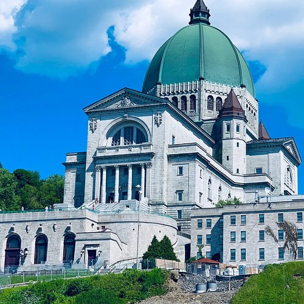
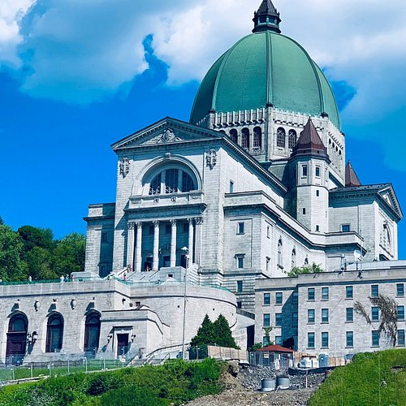

Quebec is unique in Canada as the only province where French is the official language, with the majority of
its population speaking French;
capital city is Quebec City, which is the only walled city in North America,
and the province is widely known for its maple syrup production, vibrant French-Canadian culture, and the iconic dish "poutine."
A famous festival in Quebec is called "Carnaval de Quebec", which is done near mid-February during the winter season. It is done with
many competiitions involving snow sculptures and they even make a special desert made from maple syrup.
 



Bois De Saraguay Nature Park Bois De Saraguay Nature Park is located in Montreal, and has become one of the most popular tourist attractions in Quebec. The Bois De Saraguay Nature Park was created back in 2016, and truly has an amazing history to it. The Bois De Saraguay Nature Park is about two hundred and forty acres in size, and has some of the most beautiful scenery you will be able to see within Quebec. I have been to the Bois De Saraguay Nature Park three times, and would like to go back one day. The Bois De Saraguay Nature Park has some amazing hiking trails, and has incredible agriculture as well. The Bois De Saraguay Nature Park is definitely one attraction I would highly recommend checking out, and the wildlife you will encounter is truly incredible.

The major theme, or general message, of this poem is about the nature of human suffering. Auden recognizes that all humans have painful and traumatic experiences that can change the course of their lives, but meanwhile the rest of the world continues on in a mundane way.

The impressive Château Frontenac is Québec City's most famous landmark. The luxurious hotel perched atop Cape Diamond since the late 19th century was designed to convey prestige in keeping with its Old Québec surroundings. Historic events have taken place in the building, and famous people have stayed there.

Quebec City, Canada has many streets, including historic streets, streets with shops, and streets with art. A well known street in Quebec is Rue du petit Champlain.

This postcard-perfect street, one of the oldest commercial streets in North America, is lined with one-of-a-kind boutiques and restaurants. The Petit-Champlain district isn't just illuminated for the holidays—it stays decorated all winter long, much to everyone's delight.
Quebec is a wonderful place in Canada and is a francophone place. There are many touristic places to visit, which can be very enjoyable. A good time to go to Quebec is the Winter because it has many festivals and decor to look at.